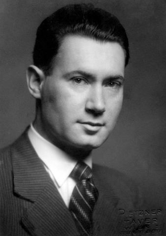

Rose Hecht
1908–1982
Life events
| Hebrew Name | 1908 · Rachel bat Yehiel |
|---|---|
| Born | |
| Lived | 16 Oct 1910 · 1200 Hirschvogelgasse 3, Vienna, Austria Map · Per Sigfried's birth record. |
| Lived | |
| Married | 9 Jul 1933 · Stadttempel, 1010, Seitenstettengasse 4, Vienna, Austria Map  |
| Departure | 20 Jul 1938 · Le Havre, Manche, Basse-Normandie, France Map · Sailed on the Ship S. S. Isle de France |
| Arrival | 26 Jul 1938 · Manhattan, New York Map · Sailed on the Ship S. S. Isle de France |
| Naturalized | 9 Feb 1939 |
| Divorced | Mar - Jul 1939 · Cleveland, Ohio Map |
| Married | 1 Jan 1940 · Robert Weiss · Cleveland, Ohio Map  |
| Lived | 1 Apr 1940 · 3264 East 139th St, Cleveland, Ohio Map · Marital Status: Married Relation to Head of House: Wife  |
| Naturalized | 11 Jul 1945 · Providence, Rhode Island Map |
| Lived | 1 Apr 1950 · Providence, Rhode Island Map · 130 Sarly Street, Relation to Head: Wife; Married  |
| Lived | 1959 - 1977 · 77 Rawson Rd, Brookline, Massachusetts Map |
| Lived | 1977 - 1982 · 2900 NW 47th Terrace, Lauderdale Lakes, Florida Map |
| Died | 25 Jul 1982 · Boston, Massachusetts Map  |
| Buried | 27 Jul 1982 · Mt. Olive Cemetery, Solon, Ohio Map · Plot 103-C-03.   |
Family

Robert Weiss1903–1993
Photos
Rose Hecht

Adele Schapira
Jochil Hecht
Clara Hecht
Sigfried 'Fred' Hecht
Rose Hecht
Jochil Hecht
Rose Hecht
Rose Hecht

Rose Hecht

Rose Hecht
Rose Hecht

Robert Weiss
Rose Hecht
Robert Weiss
Rose Hecht
Rose Hecht
Jochil Hecht
Robert Weiss
Rose Hecht

Robert Weiss
Rose Hecht
Rose Hecht
Rose Hecht
Robert Weiss
Rose Hecht
Rose Hecht
Rose Hecht
Joseph Elliot Hecht
Clara Hecht
Charles Bodek
Sadie Hecht
Anna Rubinoff
Aron Altchouler
+3 more